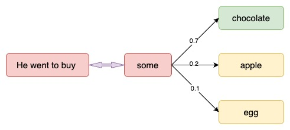
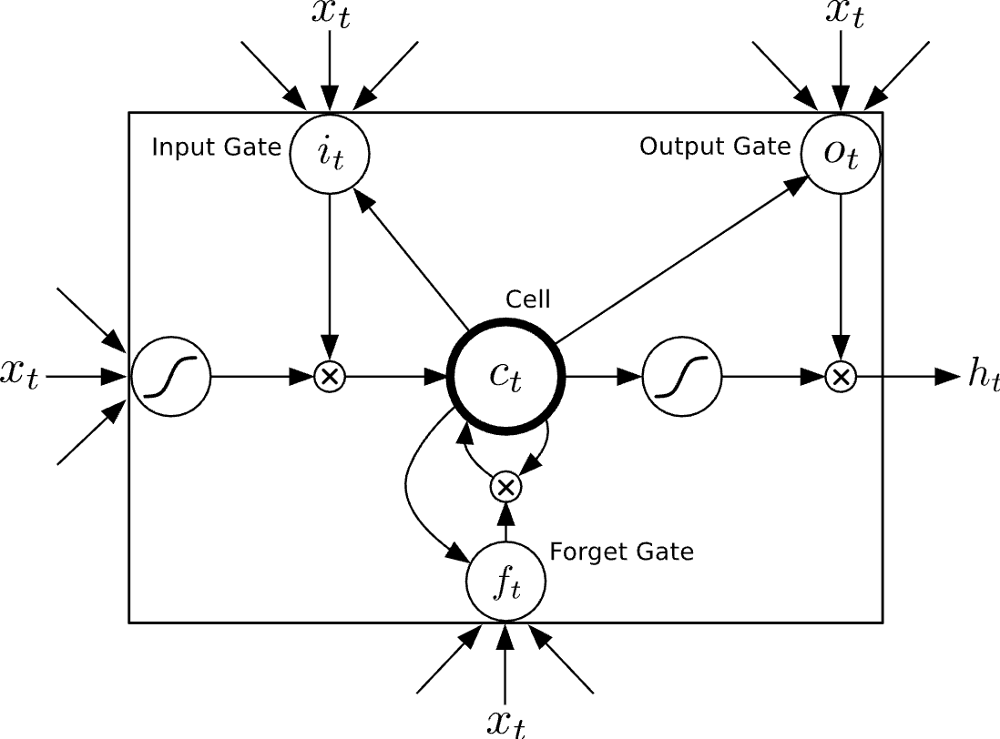

4.4 LTSM and GRU
Empirical Evaluation of Gated Recurrent Neural Networks on Sequence Modeling
Created Date: 2025-06-23
This tutorial will describe the text generation model and introduce two common RNN architectures: LSTM and GRU. Although they are outdated, they play a connecting role in the development of deep learning. The later transformer model evolved from the RNN problem.
4.4.1 Language Modeling
Our goal is to build a Language Model using a Recurrent Neural Network. Here’s what that means. Let’s say we have sentence of \(m\) words. A language model allows us to predict the probability of observing the sentence (in a given dataset) as:
In words, the probability of a sentence is the product of probabilities of each word given the words that came before it. So, the probability of the sentence "He went to buy some chocolate" would be the probability of "chocolate" given "He went to buy some", multiplied by the probability of "some" given "He went to buy", and so on.

Figure 1 - A Simple Language Model
Why is that useful? Why would we want to assign a probability to observing a sentence?
First, such a model can be used as a scoring mechanism. For example, a Machine Translation system typically generates multiple candidates for an input sentence. You could use a language model to pick the most probable sentence. Intuitively, the most probable sentence is likely to be grammatically correct. Similar scoring happens in speech recognition systems.
But solving the Language Modeling problem also has a cool side effect. Because we can predict the probability of a word given the preceding words, we are able to generate new text. It’s a generative model. Given an existing sequence of words we sample a next word from the predicted probabilities, and repeat the process until we have a full sentence. Andrej Karparthy has a great post that demonstrates what language models are capable of. His models are trained on single characters as opposed to full words, and can generate anything from Shakespeare to Linux Code.
Note that in the above equation the probability of each word is conditioned on all previous words. In practice, many models have a hard time representing such long-term dependencies due to computational or memory constraints. They are typically limited to looking at only a few of the previous words. RNNs can, in theory, capture such long-term dependencies, but in practice it’s a bit more complex.
4.4.2 Training Data and Preprocessing
To train our language model we need text to learn from. Fortunately we don’t need any labels to train a language model, just raw text. I downloaded 15,000 longish reddit comments from a dataset available on Google’s BigQuery. Text generated by our model will sound like reddit commenters (hopefully)! But as with most Machine Learning projects we first need to do some pre-processing to get our data into the right format.
4.4.2.1 Tokenize Text
We have raw text, but we want to make predictions on a per-word basis. This means we must tokenize our comments into sentences, and sentences into words. We could just split each of the comments by spaces, but that wouldn’t handle punctuation properly. The sentence "He left!" should be 3 tokens: "He", "left", "!". We'll use NLTK's word_tokenize and sent_tokenize methods, which do most of the hard work for us.
4.4.2.2 Remove Infrequent Words
Most words in our text will only appear one or two times. It’s a good idea to remove these infrequent words. Having a huge vocabulary will make our model slow to train (we’ll talk about why that is later), and because we don’t have a lot of contextual examples for such words we wouldn’t be able to learn how to use them correctly anyway. That’s quite similar to how humans learn. To really understand how to appropriately use a word you need to have seen it in different contexts.
In our code we limit our vocabulary to the vocabulary_size most common words (which I set to 8000, but feel free to change it). We replace all words not included in our vocabulary by UNKNOWN_TOKEN. For example, if we don’t include the word "nonlinearities" in our vocabulary, the sentence "nonlineraties are important in neural networks" becomes "UNKNOWN_TOKEN are important in Neural Networks".
The word UNKNOWN_TOKEN will become part of our vocabulary and we will predict it just like any other word. When we generate new text we can replace UNKNOWN_TOKEN again, for example by taking a randomly sampled word not in our vocabulary, or we could just generate sentences until we get one that doesn't contain an unknown token.
4.4.2.3 Prepend Special Start and End Tokens
We also want to learn which words tend start and end a sentence. To do this we prepend a special SENTENCE_START token, and append a special SENTENCE_END token to each sentence. This allows us to ask: Given that the first token is SENTENCE_START, what is the likely next word, which would be the actual first word of the sentence.
4.4.2.4 Build Training Data Matrices
The input to our Recurrent Neural Networks are vectors, not strings. So we create a mapping between words and indices, index_to_word and word_to_index. For example, the word "friendly" may be at index 2001. A training example \(x\) may look like \([0, 179, 241, 416]\), where 0 corresponds to SENTENCE_START. The corresponding label \(y\) would be \([179, 341, 416, 1]\). Remember that our goal is to predict the next word, so \(y\) is just the \(x\) vector shifted by one position with the last element being the SENTENCE_END token. In other wrods, the correct prediction for word 179 above would be 341, the actual next word.
4.4.3 Building the RNN
For a general overview of RNNs take a look at first part of the tutorial.
Let’s get concrete and see what the RNN for our language model looks like. The input \(x\) will be a sequence of words (just like the example printed above) and each \(x_t\) is a single word. But there’s one more thing: Because of how matrix multiplication works we can’t simply use a word index (like 36) as an input.
Instead, we represent each word as a one-hot vector of size vocabulary_size. For example, the word with index 36 would be the vector of all 0’s and a 1 at position 36. So, each \(x_t\) will become a vector, and \(x\) will be a matrix, with each row representing a word. We’ll perform this transformation in our Neural Network code instead of doing it in the pre-processing.
The output of our network \(o\) has a similar format. Each \(o_t\) is a vector of vocabulary_size elements, and each element represents the probability of that word being the next word in the sentence.
Let’s recap the equations for the RNN from the first part of the tutorial:
\(s_t = tanh(U \cdot x_t + W \cdot s_{t-1})\)
\(o_t = softmax(V \cdot s_t)\)
I always find it useful to write down the dimensions of the matrices and vectors. Let’s assume we pick a vocabulary size \(C = 8000\) and a hidden layer size \(H = 100\). You can think of the hidden layer size as the "memory" of our network. Making it bigger allows us to learn more complex patterns, but also results in additional computation. Then we have:
\(x_t \in \mathbb{R}^{8000}\)
\(o_t \in \mathbb{R}^{8000}\)
\(s_t \in \mathbb{R}^{100}\)
\(U \in \mathbb{R}^{100 \times 8000}\)
\(V \in \mathbb{R}^{8000 \times 100}\)
\(W \in \mathbb{R}^{100 \times 100}\)
This is valuable information. Remember that \(U\), \(V\) and \(W\) are the parameters of our network we want to learn from data. Thus, we need to learn a total of \(2HC + H^2\) parameters. In the case of \(C = 8000\) and \(H = 100\) that’s 1,610,000.
The dimensions also tell us the bottleneck of our model. Note that because \(x_t\) is a one-hot vector, multiplying it with \(U\) is essentially the same as selecting a column of U, so we don’t need to perform the full multiplication. Then, the biggest matrix multiplication in our network is \(V_{s_t}\). That’s why we want to keep our vocabulary size small if possible.
Armed with this, it’s time to start our implementation.
4.4.3.1 Initialization
We start by declaring a RNN class an initializing our parameters. I’m calling this class RNNNumpy. Initializing the parameters \(U\), \(V\) and \(W\) is a bit tricky. We can’t just initialize them to 0’s because that would result in symmetric calculations in all our layers. We must initialize them randomly. Because proper initialization seems to have an impact on training results there has been lot of research in this area. It turns out that the best initialization depends on the activation function (\(tanh\ in our case), and one recommended approach is to initialize the weights randomly in the interval from:
where \(n\) is the number of incoming connections from the previous layer. This may sound overly complicated, but don’t worry too much it. As long as you initialize your parameters to small random values it typically works out fine.
Above, word_dim is the size of our vocabulary, and hidden_dim is the size of our hidden layer (we can pick it). Don’t worry about the bptt_truncate parameter for now, we’ll explain what that is later.
4.4.3.2 Forward Propagation
Next, let’s implement the forward propagation, predicting word probabilities, defined by our equations above:
We not only return the calculated outputs, but also the hidden states. We will use them later to calculate the gradients, and by returning them here we avoid duplicate computation. Each \(o_t\) is a vector of probabilities representing the words in our vocabulary, but sometimes, for example when evaluating our model, all we want is the next word with the highest probability. We call this function predict.
Let’s try our newly implemented methods and see an example output:
For each word in the sentence (45 above), our model made 8000 predictions representing probabilities of the next word. Note that because we initialized \(U\), \(V\), \(W\) to random values these predictions are completely random right now. The following gives the indices of the highest probability predictions for each word:
4.4.3.3 Calculating the Loss
To train our network we need a way to measure the errors it makes. We call this the loss function \(L\), and our goal is find the parameters \(U\), \(V\) and \(W\) that minimize the loss function for our training data. A common choice for the loss function is the cross-entropy loss. If we have \(N\) training examples (words in our text) and \(C\) classes (the size of our vocabulary) then the loss with respect to our predictions \(o\) and the true labels \(y\) is given by:
The formula looks a bit complicated, but all it really does is sum over our training examples and add to the loss based on how off our prediction are. The further away \(y\) (the correct words) and \(o\) (our predictions), the greater the loss will be. We implement the function calculate_loss:
Let’s take a step back and think about what the loss should be for random predictions. That will give us a baseline and make sure our implementation is correct. We have \(C\) words in our vocabulary, so each word should be (on average) predicted with probability \(\frac{1}{C}\), which would yield a loss of \(L = -\frac{1}{N} N log \frac{1}{C} = log C\):
Pretty close! Keep in mind that evaluating the loss on the full dataset is an expensive operation and can take hours if you have a lot of data!
4.4.3.4 Backpropagation Through Time (BPTT)
Remember that we want to find the parameters \(U\), \(V\) and \(W\) that minimize the total loss on the training data. The most common way to do this is SGD, Stochastic Gradient Descent. The idea behind SGD is pretty simple. We iterate over all our training examples and during each iteration we nudge the parameters into a direction that reduces the error. These directions are given by the gradients on the loss:
SGD also needs a learning rate, which defines how big of a step we want to make at each iteration step. SGD is the most popular optimization method not only for Neural Networks, but also for many other Machine Learning algorithms. As such there has been a lot of research on how to optimize SGD using batching, parallelism and adaptive learning rates. Even though the basic idea is simple, implementing SGD in a really efficient way can become very complex. If you want to learn more about SGD this is a good place to start. Due to its popularity there are a wealth of tutorials floating around the web, and I don’t want to duplicate them here. I’ll implement a simple version of SGD that should be understandable even without a background in optimization.
But how do we calculate those gradients we mentioned above? In a traditional Neural Network we do this through the backpropagation algorithm. In RNNs we use a slightly modified version of the this algorithm called Backpropagation Through Time (BPTT). Because the parameters are shared by all time steps in the network, the gradient at each output depends not only on the calculations of the current time step, but also the previous time steps. If you know calculus, it really is just applying the chain rule. The next part of the tutorial will be all about BPTT, so I won’t go into detailed derivation here. For a general introduction to backpropagation check out this and this post. For now you can treat BPTT as a black box. It takes as input a training example \((x, y)\) and returns the gradients \(\frac{\partial L}{\partial U}, \frac{\partial L}{\partial V}, \frac{\partial L}{\partial W}\).
4.4.3.5 Gradient Checking
Whenever you implement backpropagation it is good idea to also implement gradient checking, which is a way of verifying that your implementation is correct. The idea behind gradient checking is that derivative of a parameter is equal to the slope at the point, which we can approximate by slightly changing the parameter and then dividing by the change:
We then compare the gradient we calculated using backpropagation to the gradient we estimated with the method above. If there’s no large difference we are good. The approximation needs to calculate the total loss for every parameter, so that gradient checking is very expensive (remember, we had more than a million parameters in the example above). So it’s a good idea to perform it on a model with a smaller vocabulary.
4.4.3.5 SGD Implementation
Now that we are able to calculate the gradients for our parameters we can implement SGD. I like to do this in two steps: 1. A function sdg_step that calculates the gradients and performs the updates for one batch. 2. An outer loop that iterates through the training set and adjusts the learning rate.
4.4.4 Generating Text
4.4.5 Long Short-Term Memory Unit
The Long Short-Term Memory (LSTM) unit was initially proposed by Hochreiter and Schmidhuber. Since then, a number of minor modifications to the original LSTM unit have been made. We follow the implementation of LSTM as used in Graves.

Figure 2 - LSTM Architecture
Unlike to the recurrent unit which simply computes a weighted sum of the input signal and applies a nonlinear function, each \(j\)-th LSTM unit maintains a memory \(c_t^j\) at time \(t\). The output \(h_t^j\), or the activation, of the LSTM unit is then:
where \(o_t^j\) is an output gate that modulates the amount of memory content exposure. The output gate is computed by:
where \(sigma\) is a logistic sigmoid function. \(V_o\) is a diagonal matrix.
The memory cell \(c_t^j\) is updated by partially forgetting the existing memory and adding a new memory content \({\tilde {c}}_t^j\):
where the new memory content is:
The extent to which the existing memory is forgotten is modulated by a forget gate \(f_t^j\), and the degree to which the new memory content is added to the memory cell is modulated by an input gate \(i_t^j\). Gates are computed by
\(f_t^j = \sigma {(W_f x_t + U_f h_{t-1} + V_f c_{t-1})}^j\)
\(i_t^j = \sigma {(W_i x_t + U_i h_{t-1} + V_i c_{t-1})}^j\)
Note tha \(V_f\) and \(V_i\) are diagonal matrices.
Unlike to the traditional recurrent unit which overwrites its content at each time-step, an LSTM unit is able to decide whether to keep the existing memory via the introduced gates. Intuitively, if the LSTM unit detects an important feature from an input sequence at early stage, it easily carries this information (the existence of the feature) over a long distance, hence, capturing potential long-distance dependencies.
4.4.6 Gated Recurrent Unit
A gated recurrent unit (GRU) was proposed by Cho et al. [2014] to make each recurrent unit to adaptively capture dependencies of different time scales. Similarly to the LSTM unit, the GRU has gating units that modulate the flow of information inside the unit, however, without having a separate memory cells.
The activation \(h_t^j\) of the GRU at time \(t\) is a linear interpolation between the previous activation \(h_{t-1}^j\) and the candidate activation \({\tilde {h}}_t^j\):